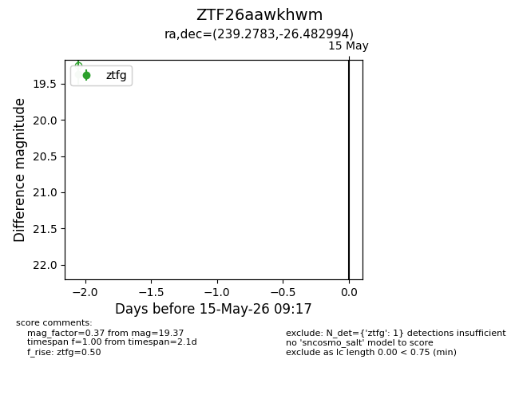
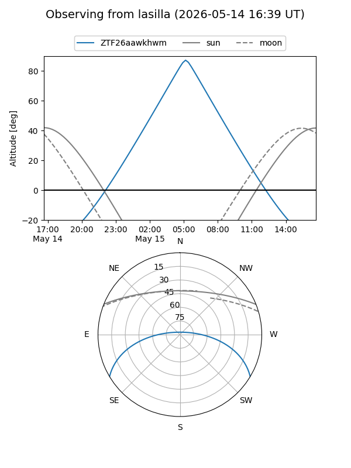
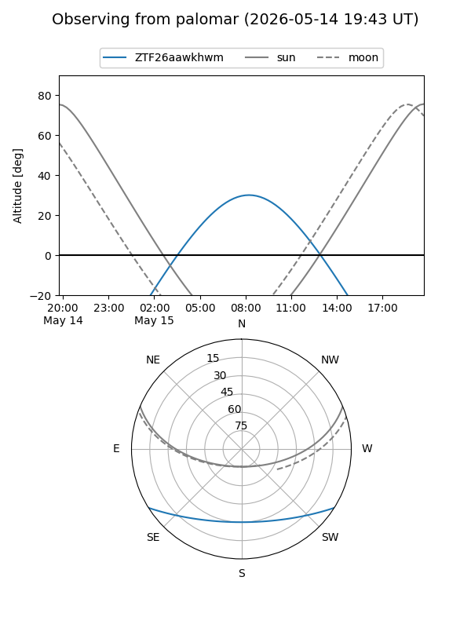

ZTF26aawkhwm
Target ZTF26aawkhwm at 2026-05-15 09:19
Aliases and brokers:
FINK: link
Lasair: link
ALeRCE: link
alt names
ZTF26aawkhwm (ztf,fink_ztf)
Coordinates:
equatorial (ra, dec) = 239.2783,-26.48299
equatorial (HMS+DMS) = 15:57:06.79,-26:28:58.78
galactic (l, b) = (346.6429,+20.23204)
Flags:
Photometry:
last ztfg=19.37
1 ztfg detections
Lightcurve

Visibility


Additional plots